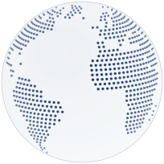
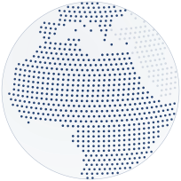

AS
Abdou Samb
Ingénieur et mathématicien sénégalais, président de FRS Consulting à Paris, conseiller à la Commission européenne sur la transformation numérique. Nommé « Africain de l’année 2025 » aux Mission Africa Awards.

Democracy Together est une initiative plurinationale : un réseau mondial de think tanks, ouvert aux jeunes, attentif à l’Afrique, à l’Amérique latine et à l’Europe.
Entendue comme respectueuse des libertés, de l’État et des règles de droit, elle l’est en France, dans de nombreux autres pays, comme dans la communauté internationale.
Il faut aujourd’hui défendre la démocratie libérale, mais aussi préparer son évolution, sinon sa refondation.
Plusieurs think tanks dédiés à la démocratie œuvrent déjà en ce sens. Mais beaucoup opèrent de façon trop isolée, et centrée sur les problèmes du monde occidental : leur impact s’en trouve réduit, et les problématiques des pays en émergence, minimisées.
02
Nous sommes convaincus qu’il y a place pour une initiative plurinationale fondée sur un réseau de think tanks. Nous l’avons baptisé Democracy Together.
Le réseau leur fait une place et cherche à les mobiliser.

Il associe pays développés et pays en émergence.

Deux continents aux problématiques très différentes, mais dont les destins sont liés.
Notre pari : une intelligence démocratique collective, pour répondre aux défis mondiaux présents et à venir, dans le cadre de la restauration d’un ordre international respectueux et respecté.
03
En favorisant un écosystème inclusif, où les idées innovantes contribuent à des sociétés plus résilientes et plus équitables.
Des questions institutionnelles comme de vie démocratique, qui se posent différemment selon les pays :
Les contributions recueillies auront aussi vocation à devenir des objets de recherche, pour le monde académique et au-delà.
04
C’est ainsi que nous construirons cette intelligence collective : par l’échange et le partage de courtes contributions.
Courtes
500 à 1 000 mots
Les contributions attendues sont nombreuses, et une idée pertinente et bien pensée peut toujours s’exprimer de façon concise.
De qualité
La qualité est contrôlée, pour favoriser les idées les plus significatives, les plus utiles et les plus innovantes.
Évaluées
par les pairs
Qui juge la qualité ? Pas nous !
Des pairs, désignés par les contributeurs eux-mêmes. C’est l’une des singularités de notre initiative.
05
Bilingue, bientôt multilingue, KOHOP publiera les contributions des membres. Son principe : le jugement par les pairs, à la manière d’une revue scientifique.
500 à 1 000 mots, avec des liens vers des textes plus nourris, disponibles en un clic.
Pas d’anonymat : leurs noms et leurs analyses sont publiés avec son texte.
Il peut récuser un relecteur trop proche de l’auteur, par exemple un coauteur.
2 semaines
Il reçoit les critiques et décide d’en tenir compte ou non.
Il accepte ou refuse la publication. Deux avis positifs valent presque automatiquement acceptation, sauf outrance évidente ou infraction à la charte.
Un pari sur l’honnêteté intellectuelle et la transparence.
06
Ingénieur et mathématicien sénégalais, président de FRS Consulting à Paris, conseiller à la Commission européenne sur la transformation numérique. Nommé « Africain de l’année 2025 » aux Mission Africa Awards.
Biologiste français, professeur honoraire au Collège de France, ancien directeur de l’Institut Pasteur, membre de l’Académie des sciences. Auteur de plus de 350 publications scientifiques et d’une dizaine de livres, dont plusieurs sur la démocratie.
Diplomate français, ancien ambassadeur de France aux États-Unis, ancien secrétaire général exécutif du Service européen pour l’action extérieure, senior fellow au Carnegie Endowment for International Peace.
Secrétaire générale de l’association : Armelle Chapalain
Les cotisations des membres, des dons, des subventions d’institutions comme l’Union européenne et des partenariats choisis avec des entreprises engagées dans la RSE. Un fonds dédié aux projets collaboratifs sera créé, et l’association se dotera d’indicateurs de performance.
07
Toute institution qui a une activité de think tank peut adhérer, même si elle en mène d’autres, de formation par exemple. L’adhésion passe par la signature d’une courte charte.
Écrivez-nous
contact@democracytogether.org
Association loi 1901 · Siège à Paris